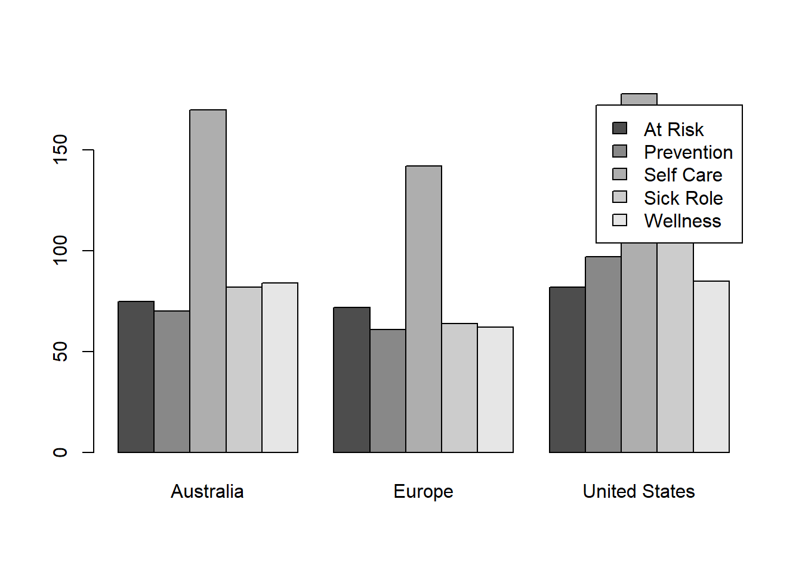
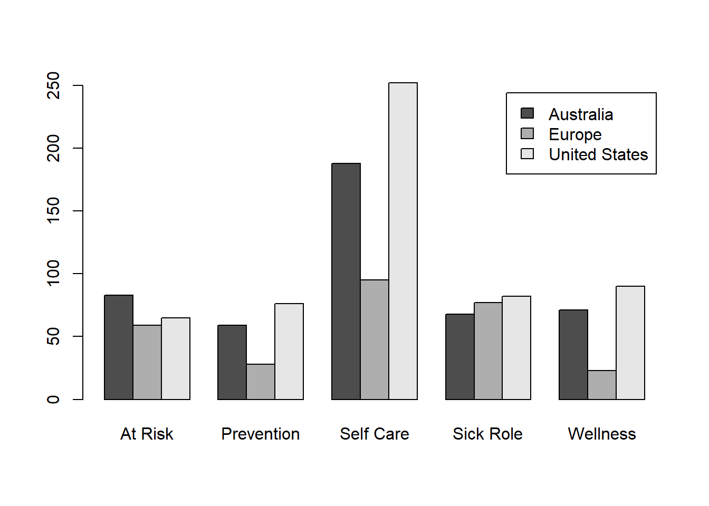
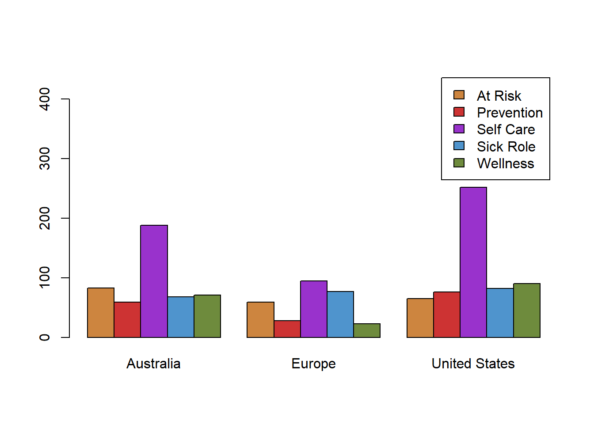

Lesson 19: Inference for Independence of Categorical Data
The Chi-squared Test of Independence
The chi-squared test of independence allows us to determine if two different categorical variables are related to each other. Here are some questions that could be answered with a chi-squared test of independence.
- Does the education level obtained by your father impact the education level you will obtain in life? (Here education level could be defined to be one of: High School, Associates Degree, Bachelor’s Degree, or Graduate Degree. The two variables we would be comparing would be the child’s education level and their father’s education level.)
- Does the marital status of a person (single, married, widowed, or divorced/separated) relate to the overall happiness of that person (very happy, happy, not too happy)?
- Does a student’s major (say Business, Nursing, Biology, or Math) have any impact on their ability to get a good paying job (say above $50,000 per year versus below $50,000) after graduating from college?
In each of these examples, there were two sets of categorical data that were being compared to see if there was any relation between those variables. An important word that will be used in this lesson to talk about variables being related or not is the word independent. Things that are independent of each other have absolutely no relation to each other. On the other hand, when things are related to each other, that means that they are not independent of each other. Keep this in mind as you read this lesson. Independent means not related, and not independent means related.

Case Study: Chiropractic Care

A study was conducted to determine why patients in Australia, Europe, and the U.S.A. seek chiropractic care. Patients were classified based on their location (Australia, Europe, or the U.S.A.) and their motivation for seeking treatment. Using descriptions developed by Green and Krueter, patients were asked which of the five reasons led them to seek chiropractic care :
- Wellness: defined as optimizing health among the self-identified healthy
- Prevention: defined as preventing illness among the self-identified healthy
- At risk: defined as preventing illness among the currently healthy who are at heightened risk to develop a specific condition
- Sick role: defined as getting well among those self-perceived as ill with an emphasis on therapist-directed treatment
- Self care: defined as getting well among those self-perceived as ill favoring the use of self vs. therapist directed strategies
The research question was whether people’s motivation for seeking chiropractic care was related to their location: Europe, Australia, or the United States or not. The hypothesis test used to address this question was the chi-squared (\(\chi^2\)) test of independence. (Note that the Greek letter \(\chi\) is pronounced, “ki” as in “kite.”)
The null and alternative hypotheses for this chi-squared test of independence are: \[ \begin{array}{rl} H_0\colon & \text{The location and the motivation for seeking treatment are independent} \\ H_a\colon & \text{The location and the motivation for seeking treatment are not independent} \\ \end{array} \]
Note: When speaking of the hypotheses in the absence of a context, we can write them in the form \[ \begin{array}{rl} H_0\colon & \text{The row variable and the column variable are independent} \\ H_a\colon & \text{The row variable and the column variable are not independent} \\ \end{array} \] When writing these in the context of a given situation, replace “row variable” and “column variable” by a more descriptive reference.
We will use the level of significance \(\alpha = 0.05\).

The researchers reported on their data collection procedures with the following statement. “Using an international convenience sample of Sacro-Occipital Technique (SOT) practitioners, 1316 consecutive patients attending 27 different chiropractic clinics in the USA, Europe and Australia completed a one-page survey on intake to assess reason for seeking care. A forced choice response was obtained characterizing the patient’s reason for seeking chiropractic care.”

The data from the study are given in the file chiropractic_care_raw.xlsx. (Review of reading in data.) Each row represents the responses of one person.
Here is a brief excerpt of the data:| location | motivation |
|---|---|
| Australia | Self Care |
| Australia | At Risk |
| Australia | Preventative |
| Australia | Self Care |
| Australia | Sick Role |
| Australia | Self Care |
| : | : |
| Europe | Sick Role |
| Europe | Sick Role |
| Europe | At Risk |
| Europe | Wellness |
| : | : |
| United States | Sick Role |
| United States | At Risk |
| United States | Wellness |
| United States | Preventative |
Motivation for Choosing to Seek Chiropractic Care
R Instructions for Clustered Bar Charts
First, read in the data from the file chiropractic_care_raw.xlsx. (Review of reading in data.)
You can use the head() function to look at the first few rows of the data.
head(chiropractic_care_raw) location motivation
1 Australia Self Care
2 Australia At Risk
3 Australia Preventative
4 Australia Self Care
5 Australia Sick Role
6 Australia Self CareIt is hard to visualize these data. We summarize them into a table of counts, which can be called a contingency table.
After reading in the data, we can organize it into a contingency table. The values in a contingency table represent the counts of the reasons individuals from each location sought chiropractic care.
contingency_table <- table(chiropractic_care_raw)
contingency_table## motivation
## location At Risk Preventative Self Care Sick Role Wellness
## Australia 83 59 188 68 71
## Europe 59 28 95 77 23
## United States 65 76 252 82 90We can transpose (or swap the rows and columns of) this table using the command t(...).
t(contingency_table)## location
## motivation Australia Europe United States
## At Risk 83 59 65
## Preventative 59 28 76
## Self Care 188 95 252
## Sick Role 68 77 82
## Wellness 71 23 90Notice that the values in the first column of the contingency table are in the first row of its transpose. When a table is transposed, the rows and columns essentially trade roles.
While a table of counts (a contingency table) is helpful in describing the relationship between two categorical variables like location and motivation, a clustered bar chart makes it much easier to visually compare and contrast the observed counts. We can use the contingency table to create a clustered bar chart using the barplot( ) command. We will include the following optional commands:
beside = TRUEputs the bars side-by-side. Not usingbeside = TRUEresults in a stacked bar chart.legend.text = TRUEadds a legend to the graph. Sometimes the legend covers the bars, so it is useful in that case to useylim = c(0, some number)so that the legend is moved off of the bars.
barplot(contingency_table, beside = TRUE, legend = TRUE)
It is usually helpful to also examine a bar chart of the transpose of the data.
barplot(t(contingency_table), beside = TRUE, legend = TRUE)
Either plot can be used. They present identical information in different ways. You will probably prefer one of these plots over the other, so use the one you feel best describes the data.
In this case, it makes sense to group the reasons people seek chiropractic care together for each country. The second boxplot seems to be more effective as presenting the information in this case.
Notice that the legend covers part of the bars in this plot. If we increase the length of the y-axis to 450 (instead of the default value), the legend no longer covers the bars. This is accomplished with the argument ylim = c(0, 450), which sets the limits of the y-axis to go from 0 to 450. We can also color the plot by providing enough colors for each of the legend entries. We will use the first plot, which has five legend entries. So, we use the command: col = c("tan3", "brown3", "darkorchid", "steelblue3", "darkolivegreen4").
barplot(t(contingency_table), beside = TRUE, legend = TRUE,
ylim = c(0, 450), # extend the y-axis from 0 to 450
col = c("tan3", "brown3", "darkorchid", "steelblue3", "darkolivegreen4"))
The predominant motivation that people choose to seek chiropractic care in any region is for Self Care. The second-most common reason differs across the three regions. For Australia, it is At Risk. For Europe, it is Sick Role, and for the United States, it is Wellness.

Our objective is to determine if the reasons people seek chiropractic care is proportionally the same for each of the three locations. In other words, we want to know if people’s motivation for seeking chiropractic care is independent of their location.
The barcharts for the three regions do not look the same. This suggests that the motivation to seek chiropractic care is not independent of the region. However, before drawing a conclusion it is important to conduct the chi-squared test of independence. The \(P\)-value from this test will help us know if there are statistically significant differences in the ratios across the groups. If we fail to reject the null hypothesis, then motivation and location are independent (i.e., not related). So any patterns we are seeing in the bar plot can be attributed to random chance. However, if we reject the null hypothesis then we can claim that motivation and location are not independent (meaning the proportions of the reasons people seek care is different in the three locations). We can then draw our final conclusions regarding the patterns observed in the side-by-side bar plots.
R Instructions for Performing a Chi-squared Test of Independence
To perform a chi-squared test of independence in R, use the chisq.test( ) function. Using this function requires that you have previously made a table of counts. (Review the R Instructions for Clustered Bar Charts to review how to create a table of counts in R.)
chisq_results <- chisq.test(contingency_table)
chisq_results
Pearson's Chi-squared test
data: contingency_table
X-squared = 49.743, df = 8, p-value = 4.58e-08The “X-squared” value of 49.743 is the test statistic of the test. Technically, it should be typeset as \(\chi^2 = 49.743\). The text “X-squared” is used to represent the symbol (\(\chi^2\)), which is the Greek letter chi (\(\chi\)) squared. The degrees of freedom (df) and the \(P\)-value are also given in this output.
Recall that the hypotheses of this test were:
\(~~~~~H_0\colon\) Location and the motivation to visit a chiropractor are independent
\(~~~~~H_a\colon\) Location and the motivation to visit a chiropractor are not independent
The test statistic is: \(\chi^2 = 49.743\), with \(df = 8\) and \(P\)-value \(= 4.58e-08 = 0.000~000~045~8 < 0.05 = \alpha\). We reject the null hypothesis and conclude that location and the motivation to visit a chiropractor are not independent. This means that the motivation is differs across the locations.
Requirements
The following requirements must be met in order to conduct a \(\chi^2\) test of independence:
The sample of data should be representative of the full population. This is most likely to happen when simple random sampling is used to obtain a sample from the population.
- In this study, a convenience sample was used. So there could be some doubt as to whether these individuals are representative of all individuals in each country that seek chiropractic care.
Each expected count must be greater than or equal to 5.
In this study, all expected counts were greater than 5.
To check expected counts in R, use the code:
chisq_results$expectedmotivation location At Risk Preventative Self Care Sick Role Wellness Australia 73.77128 58.09043 190.6649 80.89894 65.57447 Europe 44.35714 34.92857 114.6429 48.64286 39.42857 United States 88.87158 69.98100 229.6922 97.45821 78.99696- As shown in the above table, the smallest expected count is
63.71289, which is well above the required 5.

People in Europe, Australia, and the United States evidently have different reasons for seeking chiropractic care. It appears that individuals in Europe are much more likely to seek chiropractic care in the sick role than individuals in the United States and Australia. The Europeans are also less likely to visit a chiropractor for wellness reasons.
Other considerations
Swapping the Row and Column Variables
There is no general guideline for deciding which variable is the row variable and which variable is the column variable in a \(\chi^2\) test of independence. To see why not, complete the questions that follow.
- Re-do the \(\chi^2\) test of independence for the chiropractic care data, but use “Motivation” as the row variable. Then compare the degrees of freedom, \(\chi^2\) test statistic, and \(P\)-value of this test, with the degrees of freedom, \(\chi^2\) test statistic, and \(P\)-value for the test conducted above, when “Location” was the row variable.
- What do you conclude about swapping the row and column variables in a \(\chi^2\) test of independence?
There may be no general guideline for deciding which variable is the row variable, but the graphics produced by your software may depend on this decision. For example, R will give you a different clustered bar chart when you use “Location” as the row variable than when you use “Motivation” as the row variable. Sometimes, choosing one of the variables as the row variable makes the clustered bar chart easier to understand.
Why \(H_a\) is Worded As It Is
Recall that in the chiropractic care example, the hypotheses for the \(\chi^2\) test of independence were
\[ \begin{array}{1cl} H_0: & \text{Location and the motivation to visit a chiropractor are independent} \\ H_a: & \text{Location and the motivation to visit a chiropractor are not independent} \end{array} \]
You may wonder why we don’t write “\(H_a\colon\) The motivation to visit a chiropractor depends on location.” Well, couldn’t we say just as easily that location depends on the motivation to visit a chiropractor? It may seem a little strange when phrased this way. Let’s use the following exercises to look briefly at a somewhat less strange example, then return to this example.
- Suppose you want to know whether a student’s stress level and the degree to which they feel a need to succeed are independent. What should your hypotheses be?
- For their alternative hypothesis, a student erroneously writes “\(H_a\colon\) Stress level depends on the need to succeed.” If they reject \(H_0\), what will they conclude?
- Another student erroneously writes “\(H_a\colon\) Need to succeed depends on stress levels.” If they reject \(H_0\), what will they conclude?
- Could it be that a student’s need to succeed depends on their stress level? Could it be that their stress level depends on their need to succeed? How can the \(\chi^2\) test of independence distinguish between these two possibilities?
According to the exercises you just did, we are not justified in writing an alternative hypothesis that specifies which variable depends on which. Could we write “\(H_a\colon\) Stress level and need to succeed are dependent”? After all, “independent” and “dependent” are opposites, aren’t they? This may seem reasonable, but we have to be careful of the technical terms. Statisticians have gone to some trouble to carefully define “independent.” They have not defined “dependent.” (As suggested by the exercises you just did, dependence is complicated, perhaps too complicated to be able to be defined conveniently.) They use the phrase “not independent” as the opposite of “independent.” So will we, writing “\(H_a\colon\) Stress level and need to succeed are not independent.”
Likewise, in the chiropractic care example, we can’t say in the alternative hypothesis that location depends on motivation, nor that motivation depends on location, nor that each depends on the other, nor that both depend on something else, nor that location and motivation are dependent. Instead, we write “\(H_a\colon\) The location and the motivation for seeking treatment are not independent,” as statisticians do.
No Confidence Intervals
We do not calculate confidence intervals when working with contingency tables. Think about it: With three rows and five columns in the table for the chiropractic care example, there are 15 proportions. It can be shown that if we compare these two at a time, there would be 105 pairs to compare. How could we possibly interpret a collection of 105 confidence intervals? Also, if our confidence level is 95%, we would expect that about 5 of our confidence intervals would not contain the true difference between proportions, but we wouldn’t know which ones. Rather than take the risks this would cause, statisticians do not to calculate confidence intervals for contingency tables.
Summary
The \(\chi^2\) hypothesis test is a test of independence between two variables. These variables are either associated or they are not. Therefore, the null and alternative hypotheses are the same for every test: \[ \begin{array}{1cl} H_0: & \text{The (first variable) and the (second variable) are independent} \\ H_a: & \text{The (first variable) and the (second variable) are not independent} \end{array} \]
The degrees of freedom (\(df\)) for a \(\chi^2\) test of independence are calculated using the formula \(df = (\text{number of rows}-1)(\text{number of columns}-1)\)
In our hypothesis testing for \(\chi^2\) we never conclude that two variables are dependent. Instead, we say that two variables are not independent.
To create a clustered bar chart in R first requires using either
cbind( )orrbind( )to create a table of observed counts, and then usingbarplot(..., beside = TRUE, legend.text = TRUE)to create the plot. Review this by clicking here.To perform a chi-squared test of independence in R, use the
chisq.test( )with your table of observed counts placed inside the function. Review this by clicking here.To check the requirements of a chi-squared test of independence, use the code
chisq_test_results$expectedwherechisq_test_resultsis the results you saved from your chi-square test. Verify that all expected counts are greater than or equal to 5.
Copyright © 2020 Brigham Young University-Idaho. All rights reserved.